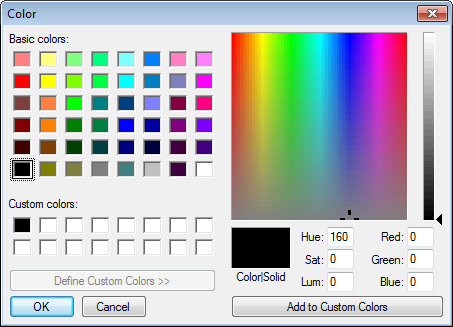
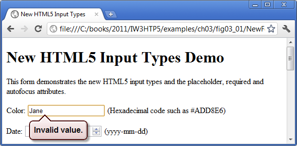

3.2.1 input Type color
The color input type (Fig. 3.1; lines 20–21) enables the user to enter a color. Opera displays a color picker control that shows the default color (black) with a down arrow that, when clicked, shows a drop-down with 20 basic colors (Fig. 3.2). The user can select a color or click the Other... button to select from additional basic colors or create a custom color. At the time of this writing, most browsers render the color input type as a text field in which the user can enter a hexidecimal code.

autofocus Attribute
The autofocus attribute (Fig. 3.1; line 20)—an optional attribute that can be used in only one input element on a form—automatically gives the focus to the input element, allowing the user to begin typing in that element immediat. Figure 3.3 shows autofocus on the color element—the first input element in our form—as rendered in Chrome. You do not need to include autofocus in your forms.

Validation
Traditionally it's been difficult to validate user input, such as ensuring that an e-mail address, URL, date or time is entered in the proper format. The new HTML 5 input types are self validating on the client side, eliminating the need to add complicated JavaScript code to your web pages to validate user input, reducing the amount of invalid data submitted and consequently reducing Internet traffic between the server and the client to correct invalid input.
When a user enters data into a form then submits the form (in this example, by clicking the Submit button), the browser immediately checks the self-validating elements to ensure that the data is correct. For example, if a user enters an incorrect hexadecimal color value when using a browser that renders the color elements as a text field (e.g., Chrome), a callout pointing to the element will appear, indicating that an invalid value was entered (Fig. 3.4). Figure 3.5 lists each of the new HTML5 input types and provides examples of the proper formats required for each type of data to be valid.

